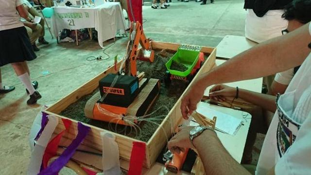
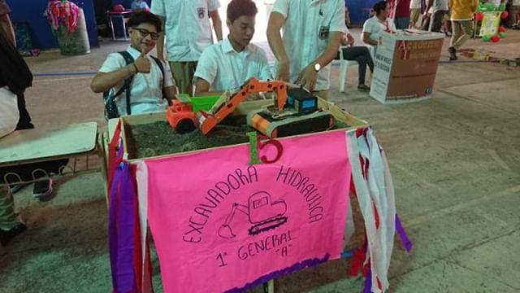
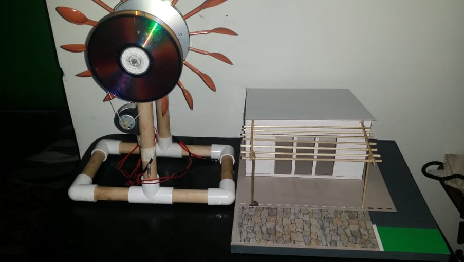
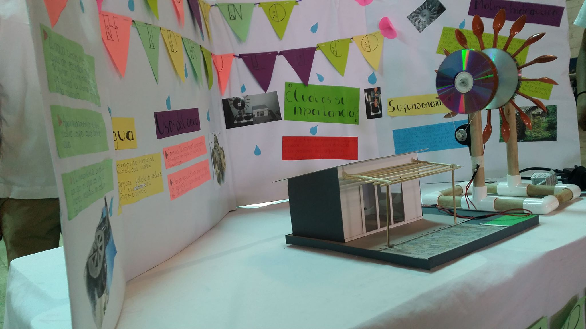

Tubo de Vacio
Tubos de vacío o Válvulas de vacío. Dispositivos electrónicos que consisten en una cápsula de vacío de acero o de vidrio, con dos o más electrodos entre los cuales pueden moverse libremente los electrones.
Este fue desarrollado por un grupo de alumnos de el 1ro Software "B"
_ _ _ _ _ _ _ _
Maquina de Peluches.
Este funcionaba a base de Jeringas y liquido que se transporta mediante pequeñas mangueras aplicando asi la fuerza hidraulica la cual hace que la pinza o brazo principal de esta maquina se mueva y tenga la capacidad de agarrar objetos.
Hecho por un grupo de alumnos/a de el 2do Salud "B"
_ _ _ _ _ _ _ _
Aire Acondicionado Casero.
Obviamente no puede competir con los aparatos profesionales, pero sí ayudará a refrescar una habitación pequeña de casa.Es una temperatura que puede enfriar durante 30 minutos una habitación más o menos pequeña.
Desarrollado por Alumnos de el 2do año General.
_ _ _ _ _ _ _ _
Excabadora Hidraulica.
Mediante esta maqueta se represento como funcionan las verdaderas maquinas hidraulicas, en esta ocasion la fuerza que movia esta "mini" maquina era la que se producia al presionar las jeringas lo cual a su vez transportaba los liquidos por las mangueras.
 
Este fue elaborado por un grupo de alumnos de el 1ro General "A".
_ _ _ _ _ _ _ _
Molino Eolico.
Este funciona convirtiendo la energía cinética del viento en energía mecánica a través de una hélice y en energía eléctrica gracias a un alternador (generador de corriente eléctrica alterna).Esto fue lo que en este proyecto se represento, si bien es cierto esto no bastara para iluminar toda una casa, pero si haremos un gesto eco-amigable a favor del planeta.
 
Elaborado por estudiantes de el 1ro General "B".
_ _ _ _ _ _ _ _
Ciudad Tesla.
Este proyecto constaba primeramente por una maqueta representando una ciudad en el centro de esta se encontraba una bobina de Tesla que era capaz de iluminar parte de esta ciudad o encender una tubo led.
Desarrollado por un grupo de estudiantes de el 1er año General "A".
Ciudad que funcionaba con Energia Eolica.
Este constaba de una maqueta simulando una ciudad la cual es sus "calles" tenia el tendido electrico el cual funcionaba a base de un mini generador de energia eolica.
Elaborado por un grupo de estudiantes de 1er Año en Desarrollo de Software.